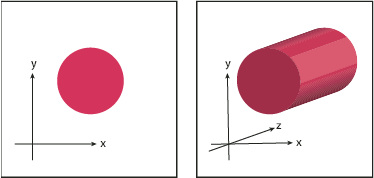
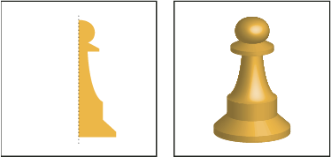

Create 3D objects
3D effects enable you to create three-dimensional (3D) objects from two-dimensional (2D) artwork. You can control the appearance of 3D objects with lighting, shading, rotation, and other properties. You can also map artwork onto each surface of a 3D object.
There are two ways to create a 3D object: by extruding or revolving. In addition, you can also rotate a 2D or 3D object in three dimensions. To apply or modify 3D effects for an existing 3D object, select the object and then double-click the effect in the Appearance panel.
For more information about working with 3D objects in Illustrator, see the 3D tutorials at www.adobe.com/go/learn_ai_tutorials_3D. For a video on creating 3D objects, see www.adobe.com/go/vid0053.
 Create a 3D object by extruding
Create a 3D object by extruding
Extruding extends a 2D object along the object’s z axis to add depth to the object. For example, if you extrude a 2D ellipse, it becomes a cylinder.

Create a 3D object by revolving
Revolving sweeps a path or profile in a circular direction around the global y axis (revolve axis) to create a 3D object. Because the revolve axis is vertically fixed, the open or closed path that you revolve typically needs to depict half of the desired 3D object’s profile in a vertical and front-facing position; you can then rotate the 3D object’s position in the effect’s dialog box.

-
Select the object.
Note: Applying the 3D Revolve effect to one or more objects simultaneously revolves each object around its own axis. Each object resides in its own 3D space and can’t intersect other 3D objects. Applying the Revolve effect to a targeted group or layer, on the other hand, revolves the objects around a single axis.
 Revolving a filled path with no stroke is much
faster than revolving a stroked path.
Revolving a filled path with no stroke is much
faster than revolving a stroked path.